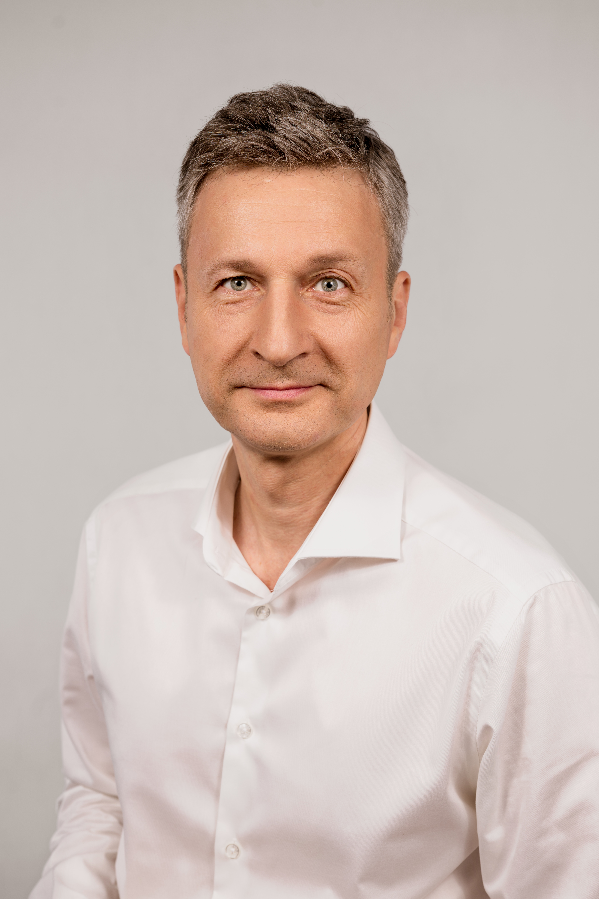
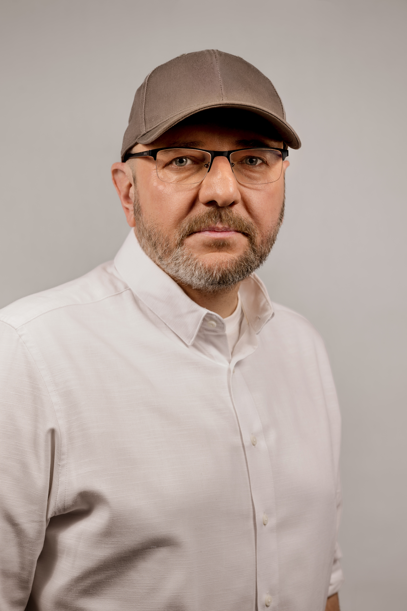
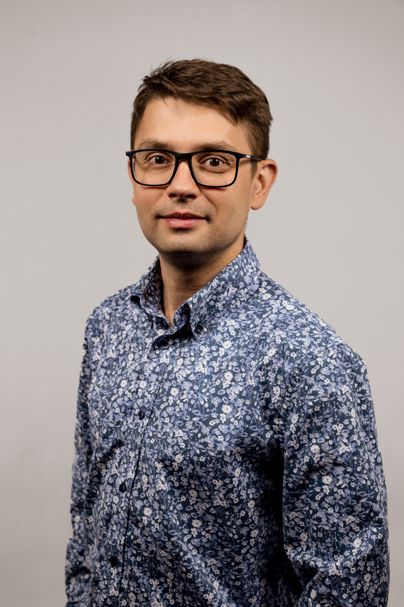
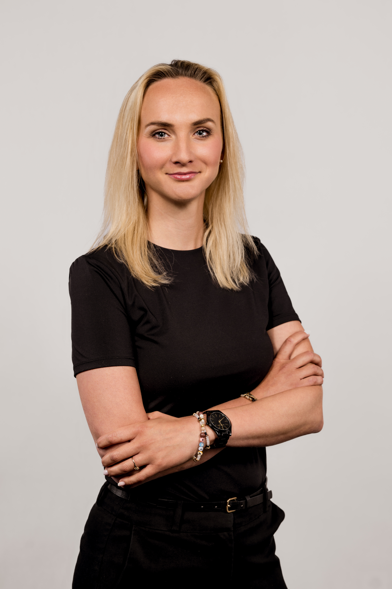

Film. Reklama. Social media. Dokumentacja. Od 2000 roku.
↓ Zobacz realizacje
Właściciel HS Concept od 2000 roku. Dziennikarz, prezenter radiowy i telewizyjny, producent. Absolwent Ekonometrii Menadżerskiej na Uniwersytecie Szczecińskim. Współpracuje z Telewizją Polską, Deutsche Welle, Polskim Radiem Szczecin i TVN24. Produkuje kampanie reklamowe dla największych marek (m.in. Żywiec, Ministerstwo Zdrowia, Kancelaria Senatu) oraz filmy promocyjne dla instytucji publicznych. Autor kampanii dla Akademii Sztuki nagrodzonej tytułem Róża Promocji 2014. Organizator wydarzeń masowych (Pasja Szczecińska, IPN — Moja Niepodległa).
Jedna z najbardziej rozpoznawalnych postaci szczecińskiego dziennikarstwa. Z Polskim Radiem Szczecin związany od 1996 r., w latach 2011–2016 redaktor naczelny rozgłośni. Dziennikarz Roku 2008 (SDRP). Były reporter „Faktów" TVN. W 2023 r. relacjonował wojnę w Ukrainie z rejonu Charkowa, Kramatorska i Doniecka. Reżyser dokumentu „Dymkowski. Najważniejszy mecz". Współzałożyciel magazynu „Prestiż Szczecin".


Operator kamery i drona, montażysta, twórca obrazu z wykształceniem artystycznym i technicznym. Absolwent Akademii Sztuki w Szczecinie. Współtworzył filmy z japońską telewizją publiczną. Dokumentował transatlantycki rejs kajakiem Aleksandra Doby. Jego zdjęcie Szczecina z drona wyróżnił Mark Zuckerberg. Pracował z Kayah, Hey, Kult, Gregory Porter i Keyonem Harroldem. Realizował materiały dla TVN, Polsat, Ipla, Newsweek.
Content creator i strateg z doświadczeniem w budowaniu marek w mediach społecznościowych. Twórczyni @aniamakescontent (14,8 tys. obserwujących). Prowadzi PowerSkills.ai — firmę szkoleniową z AI dla biznesu, której klientami są m.in. Microsoft i Bridgestone. Specjalizuje się w contencie sprzedażowym i strategii opartej na danych.

Filmy dokumentalne
Marki i instytucje